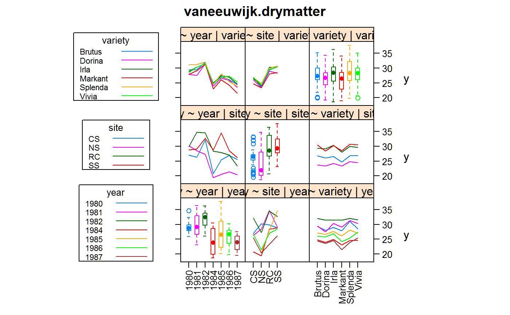

vaneeuwijk.drymatter.RdMulti-environment trial of maize, dry matter content
data("vaneeuwijk.drymatter")
A data frame with 168 observations on the following 5 variables.
yearyear
sitesite, 4 levels
varietyvariety, 6 levels
ydry matter percent
Percent dry matter is given.
Site codes are soil type classifications: SS=Southern Sand, CS=Central Sand, NS=Northern Sand, RC=River Clay.
These data are a balanced subset of the data analyzed in van Eeuwijk, Keizer, and Bakker (1995b) and Kroonenberg, Basford, and Ebskamp (1995).
van Eeuwijk, Fred A. and Pieter M. Kroonenberg (1998). Multiplicative Models for Interaction in Three-Way ANOVA, with Applications to Plant Breeding Biometrics, 54, 1315-1333. http://doi.org/10.2307/2533660
Used with permission of Fred van Eeuwijk.
Kroonenberg, P.M., Basford, K.E. & Ebskamp, A.G.M. (1995). Three-way cluster and component analysis of maize variety trials. Euphytica, 84(1):31-42. http://doi.org/10.1007/BF01677554
van Eeuwijk, F.A., Keizer, L.C.P. & Bakker, J.J. Van Eeuwijk. (1995b). Linear and bilinear models for the analysis of multi-environment trials: II. An application to data from the Dutch Maize Variety Trials Euphytica, 84(1):9-22. http://doi.org/10.1007/BF01677552
Hardeo Sahai, Mario M. Ojeda. Analysis of Variance for Random Models, Volume 1. Page 261.
library(agridat) data(vaneeuwijk.drymatter) dat <- vaneeuwijk.drymatter dat <- transform(dat, year=factor(year)) dat <- transform(dat, env=factor(paste(year,site))) libs(HH) HH::interaction2wt(y ~ year+site+variety,dat,rot=c(90,0), x.between=0, y.between=0, main="vaneeuwijk.drymatter")# anova model m1 <- aov(y ~ variety+env+variety:env, data=dat) anova(m1) # Similar to VanEeuwijk table 2#> Warning: ANOVA F-tests on an essentially perfect fit are unreliable#> Analysis of Variance Table #> #> Response: y #> Df Sum Sq Mean Sq F value Pr(>F) #> variety 5 80.18 16.036 #> env 27 3008.21 111.415 #> variety:env 135 161.87 1.199 #> Residuals 0 0.00#> Warning: ANOVA F-tests on an essentially perfect fit are unreliable#> Analysis of Variance Table #> #> Response: y #> Df Sum Sq Mean Sq F value Pr(>F) #> year 6 1194.65 199.11 #> site 3 962.19 320.73 #> variety 5 80.18 16.04 #> year:site 18 851.37 47.30 #> year:variety 30 64.90 2.16 #> site:variety 15 17.01 1.13 #> year:site:variety 90 79.97 0.89 #> Residuals 0 0.00# variance components model libs(lme4) libs(lucid) m3 <- lmer(y ~ (1|year) + (1|site) + (1|variety) + (1|year:site) + (1|year:variety) + (1|site:variety), data=dat)#> Warning: Model failed to converge with max|grad| = 0.00280756 (tol = 0.002, component 1)vc(m3) # matches Sahai page 266#> grp var1 var2 vcov sdcor #> year:variety (Intercept) <NA> 0.3187 0.5645 #> year:site (Intercept) <NA> 7.73 2.78 #> site:variety (Intercept) <NA> 0.03507 0.1873 #> year (Intercept) <NA> 6.274 2.505 #> variety (Intercept) <NA> 0.487 0.6978 #> site (Intercept) <NA> 6.517 2.553 #> Residual <NA> <NA> 0.8885 0.9426## grp var1 var2 vcov sdcor ## year:variety (Intercept)0.3187 0.5645 ## year:site (Intercept) 7.735 2.781 ## site:variety (Intercept) 0.03502 0.1871 ## year (Intercept) 6.272 2.504 ## variety (Intercept) 0.4867 0.6976 ## site (Intercept) 6.504 2.55 ## Residual 0.8885 0.9426